10
986 fiches en français pour le niveau 10, prêtes à imprimer et avec corrigé.
986 ressources
Thème

Kazakhstan – Compréhension de lecture : texte à trous, écoute et mots mêlés

Kasperle – Compréhension de lecture : texte à trous, écoute et mots mêlés

Karl Nehammer – Compréhension de lecture : texte à trous, écoute et mots mêlés

Karaté – Compréhension de lecture : texte à trous, écoute et mots mêlés

Kaliningrad – Compréhension de lecture : texte à trous, écoute et mots mêlés

Kaiserschmarrn – Compréhension de lecture : texte à trous, écoute et mots mêlés

Jésus de Nazareth – Texte à trous, compréhension orale et mots mêlés

Jérusalem – Compréhension de lecture : texte à trous, écoute et mots mêlés
Jura souabe – Compréhension de lecture : texte à trous, écoute et mots mêlés
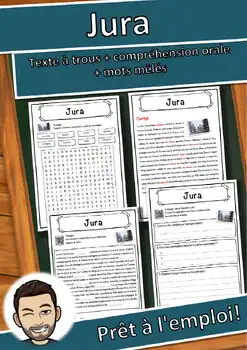
Jura – Compréhension de lecture : texte à trous, écoute et mots mêlés
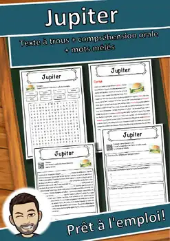
Jupiter – Compréhension de lecture : texte à trous, écoute et mots mêlés
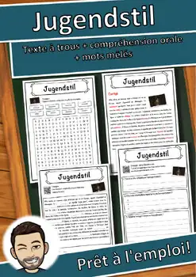
Jugendstil – Compréhension de lecture : texte à trous, écoute et mots mêlés
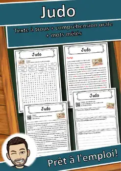
Judo – Compréhension de lecture : texte à trous, écoute et mots mêlés
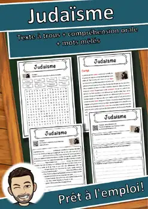
Judaïsme – Compréhension de lecture : texte à trous, écoute et mots mêlés
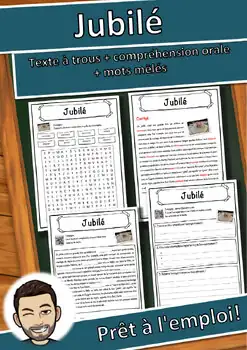
Jubilé – Compréhension de lecture : texte à trous, écoute et mots mêlés
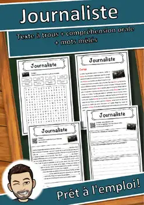
Journaliste – Compréhension de lecture : texte à trous, écoute et mots mêlés
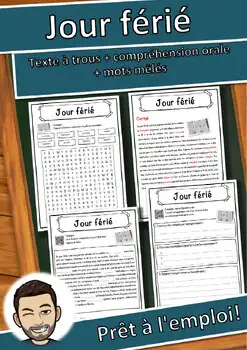
Jour férié – Compréhension de lecture : texte à trous, écoute et mots mêlés
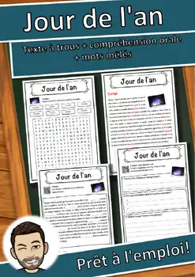
Jour de l'an – Compréhension de lecture : texte à trous, écoute et mots mêlés
Jouet – Compréhension de lecture : texte à trous, écoute et mots mêlés
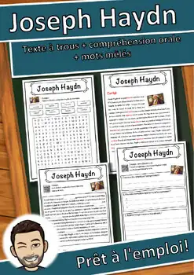
Joseph Haydn – Compréhension de lecture : texte à trous, écoute et mots mêlés
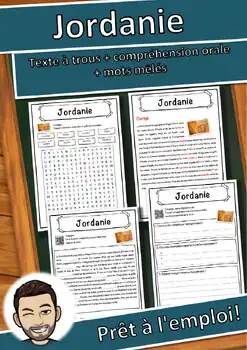
Jordanie – Compréhension de lecture : texte à trous, écoute et mots mêlés
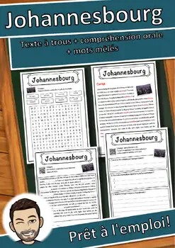
Johannesbourg – Compréhension de lecture : texte à trous, écoute et mots mêlés

Johannes Kepler – Compréhension de lecture : texte à trous, écoute et mots mêlés
Johanna Spyri – Compréhension de lecture : texte à trous, écoute et mots mêlés
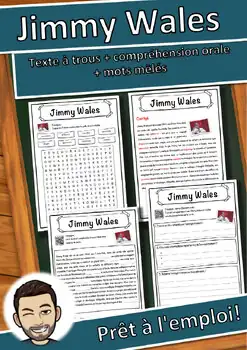
Jimmy Wales – Compréhension de lecture : texte à trous, écoute et mots mêlés
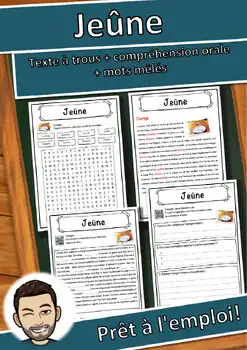
Jeûne – Compréhension de lecture : texte à trous, écoute et mots mêlés
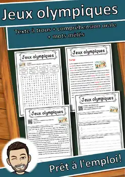
Jeux olympiques – Compréhension de lecture : texte à trous, écoute et mots mêlés
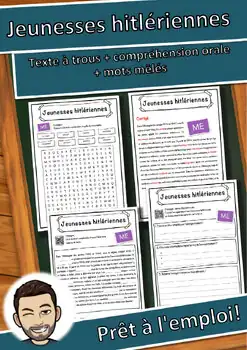
Jeunesses hitlériennes – Texte à trous, compréhension orale et mots mêlés
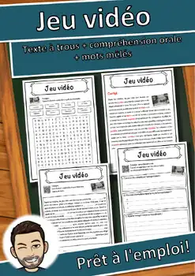
Jeu vidéo – Compréhension de lecture : texte à trous, écoute et mots mêlés
Jeu de société – Compréhension de lecture : texte à trous, écoute et mots mêlés
Jeu de cartes – Compréhension de lecture : texte à trous, écoute et mots mêlés
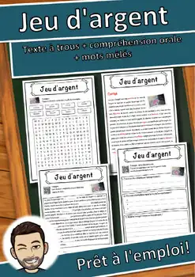
Jeu d'argent – Compréhension de lecture : texte à trous, écoute et mots mêlés
Jesse James – Compréhension de lecture : texte à trous, écoute et mots mêlés
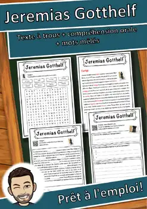
Jeremias Gotthelf – Texte à trous, compréhension orale et mots mêlés

Jeanne d'Arc – Compréhension de lecture : texte à trous, écoute et mots mêlés
Jean-Jacques Rousseau – Texte à trous, compréhension orale et mots mêlés
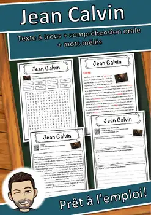
Jean Calvin – Compréhension de lecture : texte à trous, écoute et mots mêlés
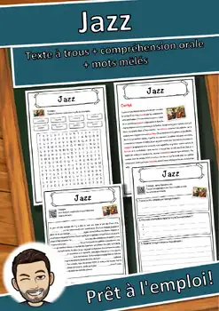
Jazz – Compréhension de lecture : texte à trous, écoute et mots mêlés
Jardinier – Compréhension de lecture : texte à trous, écoute et mots mêlés
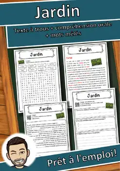
Jardin – Compréhension de lecture : texte à trous, écoute et mots mêlés
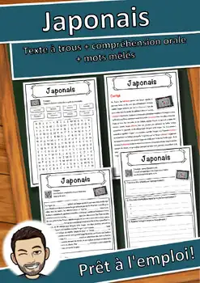
Japonais – Compréhension de lecture : texte à trous, écoute et mots mêlés

Japon – Compréhension de lecture : texte à trous, écoute et mots mêlés
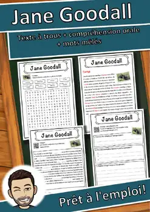
Jane Goodall – Compréhension de lecture : texte à trous, écoute et mots mêlés

James Watt – Compréhension de lecture : texte à trous, écoute et mots mêlés

James Cook – Compréhension de lecture : texte à trous, écoute et mots mêlés

Jamaïque – Compréhension de lecture : texte à trous, écoute et mots mêlés

Jakarta – Compréhension de lecture : texte à trous, écoute et mots mêlés

Ivoire – Compréhension de lecture : texte à trous, écoute et mots mêlés
Aucune ressource trouvée – essaie un autre mot ou un autre filtre.